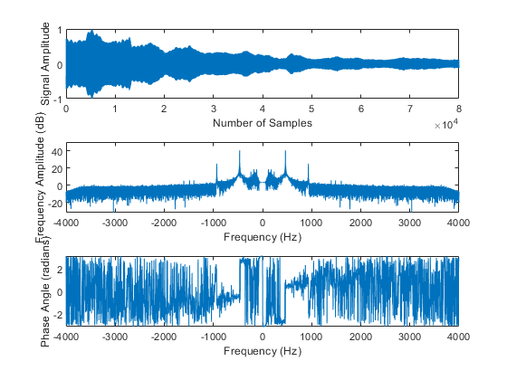
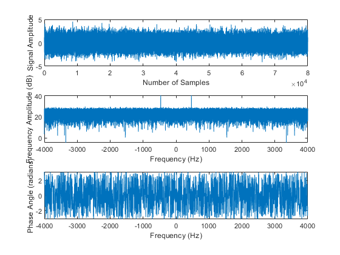
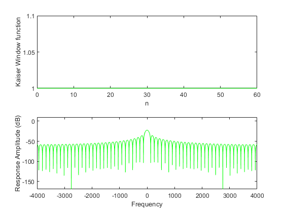
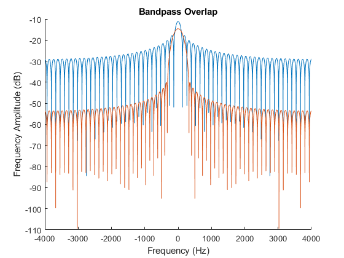
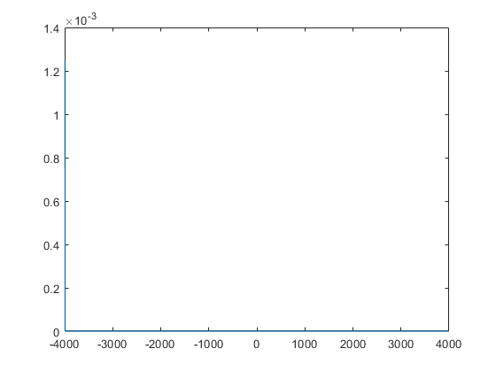

Contents
Initialization of Workspace
clear
close all
clc
M = 30;
Fc = 5;
delay = 466;
alpha1 = 0;
alpha2 = 7;
load('466-2.mat');
Analysis and Noise Addition of Signal
DFT_myRecording = analyzeAudio(myRecording, Fs, N);
myNoisyRec = myRecording + randn(N, 1);
DFT_myNoisyRec = analyzeAudio(myNoisyRec, Fs, N);
 
Filter Calculation
kaiserLPF1 = kaiserLPF(M,N,Fs,Fc,alpha1);
kaiserLPF2 = kaiserLPF(M,N,Fs,Fc,alpha2);
kaiserLPF1 = abs(ifft(exp(-j*2*pi*delay)*fftshift(fft(kaiserLPF1,N)))');
kaiserLPF2 = abs(ifft(exp(-j*2*pi*delay)*fftshift(fft(kaiserLPF2,N)))');
figure;
hold on;
frequency = linspace(-Fs/2 ,Fs/2,N);
plot(frequency, 10*log10(abs(fftshift(fft(kaiserLPF1,N)))));
plot(frequency, 10*log10(abs(fftshift(fft(kaiserLPF2,N)))));
xlabel('Frequency (Hz)');
ylabel('Frequency Amplitude (dB)');
title('Bandpass Overlap');
hold off;
figure
plot(frequency, kaiserLPF1);


 
Noise Filtration and Filtered Signal Analysis